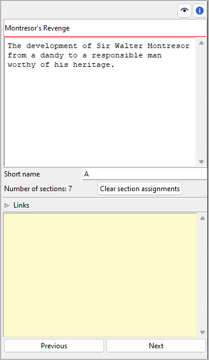

Plot line properties
The Plot line properties view opens in the right pane when you select a plot line in the tree.
Title and description
Title and description are displayed in an editable “index card”.
The editing of the title can be completed by pressing the Enter key.
Changes to the description are applied when the mouse is clicked
anywhere outside the text input field.
Short name
Be sure to enter a short name to be displayed as a reference in the tree. A single character like “A”, “B”, “C” is recommended.
The following example shows plot line short names as displayed in the tree:
Section assignments
The number of sections that belong to the selected plot line is shown below the “Short name” entry. The assignments can be made in the section properties view. You can unlink all sections from the selected plot line at once by clicking on the Clear section assignments button.
Hint
A convenient way to manage and keep track of section assignments is offered by the nv_matrix plugin.
Links
Expand or collapse this frame by clicking on the label.

This is a list for image and research document links.
Although novelibre holds some character/location/item data, it is not the right application for extensive world building. For this, you may want to use more powerful software, like Zim Desktop Wiki. In this case, novelibre allows you to create links to the text files that will take you quickly to the right places in the wiki.
Or you have collected some images that could inspire you when writing. Then simply create links to these images to open them with your system’s standard image viewer.
Tip
If you have collected several images for a character in a folder that your standard image viewer can browse through, a single link to any image file is sufficient.
The links are displayed in a list in the order they are entered.
- Add Link
When clicking on
 , a file selection dialog opens. The selected
file will be added to the link list.
, a file selection dialog opens. The selected
file will be added to the link list.Hint
By default, the dialog shows image files. For other file types, change the selector in the lower right corner.

- Remove Link
When clicking on
 or pressing the
or pressing the Delkey, the selected link is removed from the list.- Open Link
When double-clicking on a link, or clicking on
 ,
the link is opened with the standard application for the link’s file type.
,
the link is opened with the standard application for the link’s file type.Hint
If you want to open certain linked files with another application than the standard application, you can provide a novelibre “launcher” setting. For this, just create a text file named launchers.ini in the
.novx/configdirectory (where all configuration files are stored). Here you can assign applications to the file extensions.Zim Desktop wiki pages are a special case. For this, the Zim program is assigned to the .zim extension.
This example shows a setting that makes novelibre open text files with the Zim Desktop Wiki application instead of the standard text editor:
[SETTINGS] .zim = C:/Program Files (x86)/Zim Desktop Wiki/zim.exe

“Sticky note”
The yellow text area is for notes. Changes are applied when the mouse is clicked anywhere outside the text input field.
When the “sticky note” of a plot line contains text, “N” is displayed in the tree view as a reminder. If the branch of a plot line with plot points containing notes is collapsed, the “N” is displayed in the plot line row.